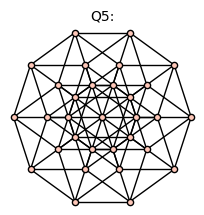
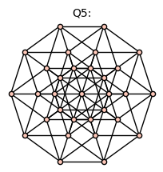

Example Reduced Graph Powers#
Some understanding of reduced graph powers can be obtained by looking at examples.
For a simple graph $G=(V,E)$, we will sometimes write $|V(G)|$ and $|E(G)|$ for the number of vertices and edges of $G$. We assume the graph $G$ is connected, so the Betti number is given by $\beta(G)=|E(G)|-|V(G)|+1$. When the graph G is understood from context, we will often use $v(G)$ and $e(G)$, or simply $v$ and $e$, for the number of vertices and edges of G.
The number of vertices in the reduced graph power $G^{(k)}$ is
where $v=|V(G)|$. The number of edges in the reduced graph power $G^{(k)}$ is
where $e=|E(G)|$. When the graph $G$ is understood, will sometimes abbreviate the number of vertices and edges in its reduced graph power by $v^{(k)} = |V(G^{(k)})|$ and $e^{(k)} = |E(G^{(k)})|$.
The path graph $P_n$#
A path graph is a graph whose $n$ vertices can be listed in the order $0, 1, \ldots , n-1$ such that the edges are $(i, i+1)$ for $i = 0, 1 \ldots , n-2$. For example,
for n in [2,4,7]:
graphs.PathGraph(n).show(figsize=3,title='P%s:' %(n))


Evidently, $|V(P_n)|=n$, $|E(P_n)|=n-1$, and $\beta(P_n)=0$. The number of vertices of the reduced graph power $P_n^{(k)}$ is $|V(P_n^{(k)})|=\binom{n+k-1}{k}$. The number of edges is $|E(P_n^{(k)})|=(n-1)\binom{n+k-2}{k-1}$. Consequently, the Betti number of the path graph on $n$ vertices is
Specializing to the case of a dimer ($k=2$), we have $|V(P_n^{(2)})|=\binom{n+1}{2}$, $|E(P_n^{(2)})|=n(n-1)$, and $\beta(P_n^{(2)}) = \binom{n-1}{2}$.
The cycle graph $C_n$#
The cycle graph $C_n$ is a graph whose $n$ vertices can be listed in the order $0, 1, \ldots , n$ such that the edges are $(i, i+1)$ for $i = 0, 1, \ldots , n-2$,
and also $(0,n-1)$. For example, $C_5$ is
Show code cell source
for n in [3,5,12]:
graphs.CycleGraph(n).show(figsize=3,title='K%s:' %(n))


For the cycle graph $|E(C_n)|=n$ and $\beta(C_n)=1$.
The number of vertices of the reduced graph power $C_n^{(k)}$ is $|V(C_n^{(k)})|=\binom{n+k-1}{k}$. The number of edges is $|E(C_n^{(k)})|=n\binom{n+k-2}{k-1}$. The Betti number is
Specializing to the case of a dimer ($k=2$), we have $v^{(2)}=\binom{n+1}{2}$, $e^{(2)}=n^2$, and
The complete graph $K_n$#
The complete graph $K_n$ is a graph with $n$ vertices and $|E(K_n)|=\binom{n}{2}$ edges.
For example, $K_5$ is
Show code cell source
for n in [2,4,7]:
graphs.CompleteGraph(n).show(figsize=3,title='C%s:' %(n))


For the complete graph, $\beta(K_n)=\binom{n-1}{2}=(n-1)(n-2)/2$.
The number of vertices of the reduced graph power $K_n^{(k)}$ is $|V(K_n^{(k)})|=\binom{n+k-1}{k}$, the number of edges is $|E(K_n^{(k)})|=\binom{n}{2}\binom{n+k-2}{k-1}$, and the Betti number is
For a dimer ($k=2$), we have $v^{(2)}=\binom{n+1}{2}$, $e^{(2)}=\binom{n}{2} n = n^2(n-1)/2$, and
The hypercube graph $Q_n$#
The hypercube graph $Q_n$ has $|V(Q_n)|=2^n$ vertices and $|E(Q_n)|=2^{n-1}n $ edges. For example, $Q_4$ is
Show code cell source
for n in [2,4,5]:
if n>3:
graphs.CubeGraph(n).show(figsize=3,vertex_size=20,vertex_labels=false,title='Q%s:' %(n))
else:
graphs.CubeGraph(n).show(figsize=3,title='Q%s:' %(n))
 

Show code cell source
n=3
graphs.CubeGraph(n).show3d(title='Q%s:' %(n))
For the hypercube graph, $\beta(Q_n)= 2^{n-1} (n-2)+1$.
The number of vertices of the reduced graph power $Q_n^{(k)}$ is $|V(Q_n^{(k)})|=\binom{2^n+k-1}{k}$. The number of edges is $|E(Q_n^{(k)})|=2^{n-1} n \binom{2^n+k-2}{k-1}$. The Betti number is
The reduced graph product of two hypercube graphs, has $|V(Q_n^{(2)})|=2^{n-1} (2^n+1)$ vertices, $|E(Q_n^{(2)})| = 2^{2n-1} n$ edges, and Betti number
In particular, $\beta(Q_2^{(2)}) = 7$ and $\beta(Q_3^{(2)}) = 61$.
The bipartite graph $K_{n,m}$#
The complete bipartite graph or biclique, denoted by $K_{n,m}$,
is a bipartite graph where the vertices are partitioned into two sets. Every vertex of the first set, ${0, 1, \ldots, n-1}$, is connected to every vertex of the second set, ${n, n+1, \ldots, n+m-1}$.
Show code cell source
graphs.CompleteBipartiteGraph(3,4).show(figsize=3,title='K%s,%s:' %(3,4))
graphs.CompleteBipartiteGraph(5,7).show(figsize=4,title='K%s,%s:' %(5,7))


The complete bipartite graph has has $|V(K_{n,m})|=n+m$ vertices, $|E(K_{n,m})|=nm $ edges, and Betti number
The number of vertices of the reduced graph power $K_{n,m}^{(k)}$ is $|V(K_{n,m}^{(k)})|=\binom{n+m+k-1}{k}$. The number of edges is $|E(K_{n,m}^{(k)})|=nm\binom{n+m+k-2}{k-1}$. This gives the Betti number
Specializing to the case of a dimer ($k=2$), we have $v^{(2)}= \binom{n+m+1}{2}$, $e^{(2)}=nm (n+m)$, and